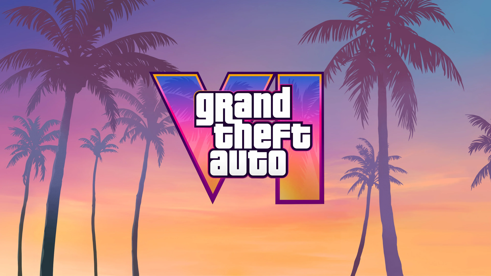
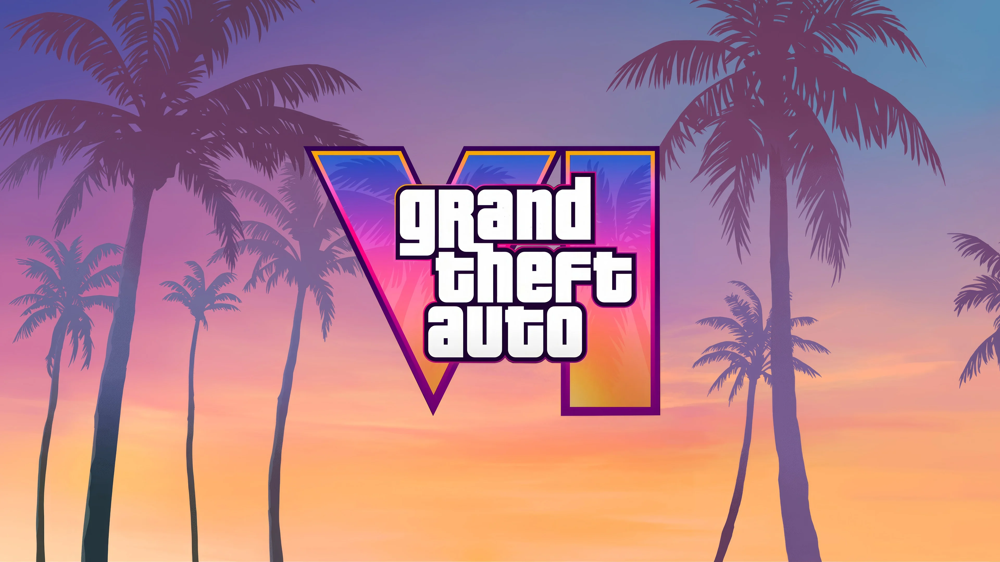

Grand Theft Auto (abreviado GTA) es una serie de videojuegos creada por David Jones y por los hermanos Sam y Dan Houser. Originalmente fue desarrollada por la compañía británica DMA Design, que posteriormente pasó a llamarse Rockstar North, de la empresa Rockstar Games. Grand Theft Auto cuenta la historia de distintos criminales y aunque sean varios, por una razón se van relacionando y envolviendo en problemas a más personajes conforme va pasando el tiempo. Es considerado un juego alto en violencia, por lo que es recomendado solo para mayores de edad.
La saga se caracteriza por su vasto y detallado mundo abierto, donde los jugadores pueden explorar entornos ricos y dinámicos. Desde bulliciosas ciudades urbanas hasta paisajes rurales pintorescos, cada localización está impregnada de vida, cultura y una narrativa que se despliega a través de diversas actividades, personajes y misiones.
En el corazón de la saga se encuentran historias profundas y complejas que abordan temas como la ambición, la traición y la redención. A través de personajes memorables y tramas entrelazadas, la saga ofrece una reflexión sobre la sociedad contemporánea, explorando cuestiones de moralidad y justicia en un contexto donde las decisiones del jugador tienen repercusiones significativas.
La saga ha sido pionera en introducir mecánicas de juego que han redefinido el género. Desde la libertad de elección hasta la interacción con un mundo que responde de manera realista a las acciones de los jugadores, cada título ha representado un avance notable en la jugabilidad y la inmersión, estableciendo un modelo a seguir para otras creaciones en el mundo del entretenimiento interactivo.
La popularidad de la saga ha dado lugar a una vibrante comunidad de aficionados y creadores, que comparten su amor por el universo que han construido. Fan art, teorías, modding y eventos en línea son solo algunas de las formas en que los seguidores se han unido para celebrar su pasión por este fenómeno cultural.
La saga GTA es más que un simple conjunto de experiencias interactivas; es un fenómeno que ha influido en la industria del entretenimiento y en la forma en que contamos historias en el medio digital. A medida que la saga continúa evolucionando, el impacto cultural y la conexión con sus seguidores son un testimonio de su relevancia continua y su capacidad para desafiar las normas del entretenimiento. ¡Explora con nosotros este fascinante mundo donde cada rincón guarda una historia y cada elección cuenta!